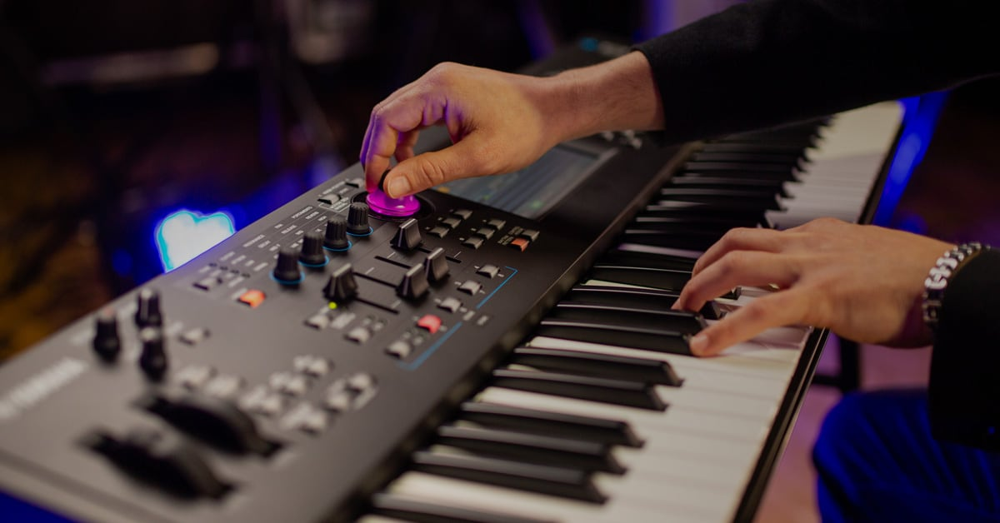

Na swoim kanale YouTube publikuję moje wersje znanych piosenek. Używam do tego instrumentów najwyższej jakości. Najczęściej gram na instrumentach marki Yamaha. Oprócz grania coverów, zajmuję się także graniem w zespole muzycznym "Atrybut". W przyszłości chciałbym nagrać płytę oraz zająć się także produkcją muzyczną i aranżacją.
Bądź na bieżąco z moimi nagraniami. Nowe nagrania publikuję na swoim kanale YouTube oraz TikTok. Staram się wrzucać nagrania regularnie.
Planujemy z zespołem występy na żywo. Będę na swoim profilu Facebook oraz w zakładce "Aktualności" ogłaszał moje najbliższe występy.

Oprócz muzyki, zajmuję się także serwisem urządzeń elektronicznych. W celu kontaktu, napisz na moim Instagramie - "jakub_topolsky"
Odkryj moje nagrania, moją pasję i muzyczne projekty.